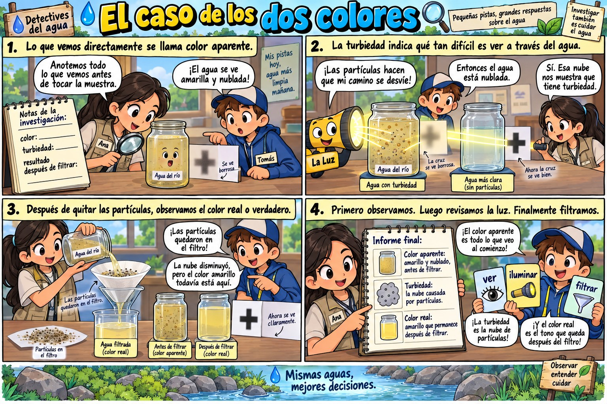
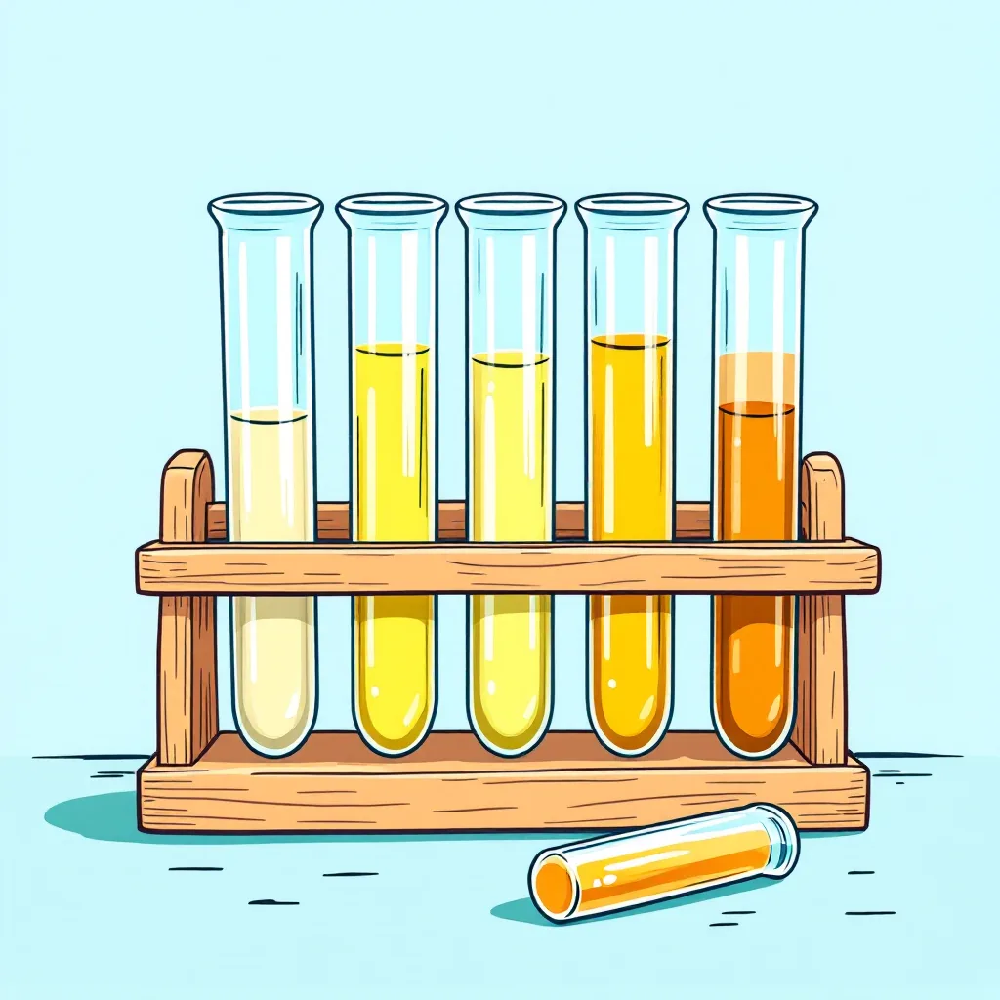
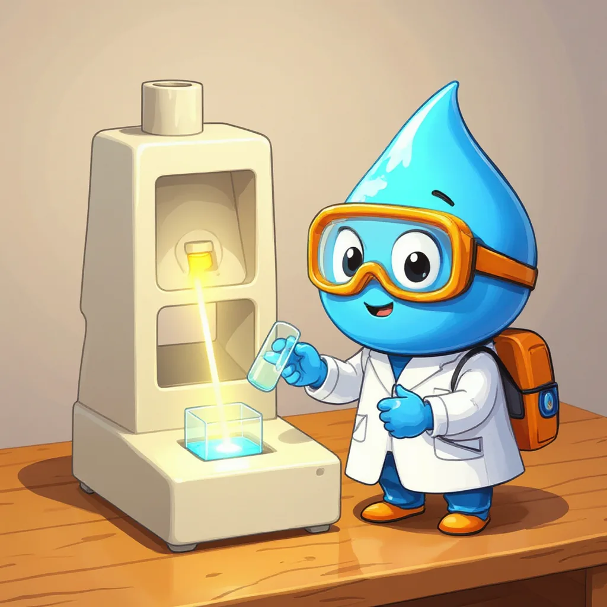
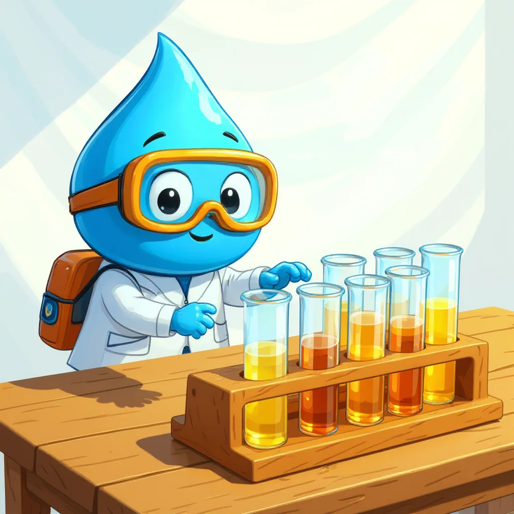
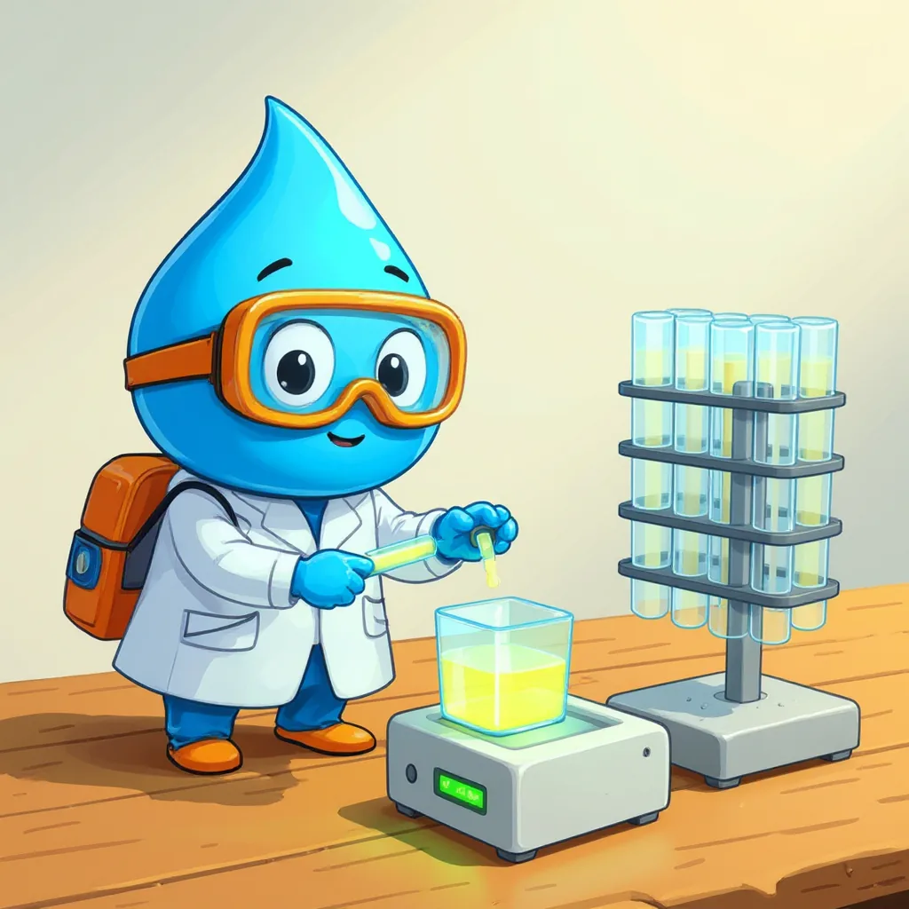
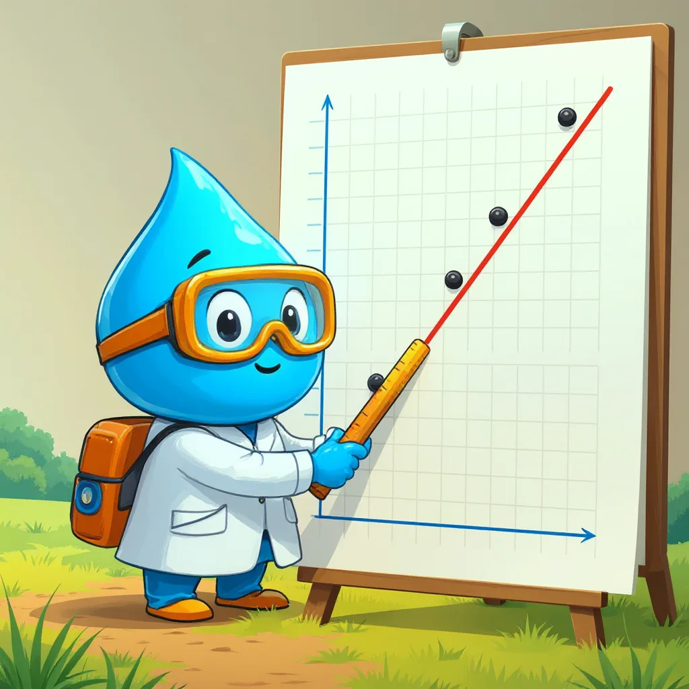

Parámetro 2 de 6
Color del agua
El caso de los dos colores y la regla que traduce la luz en números.
Color aparente y color real
Para empezar, el color del agua se debe a sustancias disueltas, como restos de hojas descompuestas o hierro. Sin embargo, al mirar una muestra sin tratar, también se ven partículas que flotan y la enturbian. Por eso, se distinguen dos colores: el color aparente, que es el que se ve en la muestra tal como llega, y el color real, que es el que queda después de filtrarla para quitar esas partículas.

Compara los dos colores
Toca cada tarjeta.
¿En qué se mide el color?
Además, el color se expresa en unidades de color (UC), también llamadas unidades platino-cobalto. Esto se debe a que se compara con mezclas preparadas con esos dos metales, que tienen un tono amarillo conocido. Por ejemplo, una mezcla de 10 UC es casi transparente y una de 50 UC ya es claramente amarilla. Así, esos tubos de referencia, llamados estándares, funcionan como las marcas de una regla.

Medir con luz

Por otra parte, el espectrofotómetro es un aparato que ilumina la muestra y mide cuánta luz se queda atrapada en ella; ese número se llama absorbancia. Mientras más color tiene el agua, más luz retiene y mayor es la absorbancia. Sin embargo, el aparato no entrega unidades de color, sino solo absorbancia. Por eso, se necesita una curva de calibración que traduzca un número en el otro.
La curva de calibración, contada como cuento
Mira las viñetas en orden.



La curva de calibración, paso a paso
- PrepararSeis estándares: 0, 10, 20, 30, 40 y 50 UC.
- MedirLa absorbancia de cada estándar.
- GraficarMarcar los puntos y trazar una recta desde el cero.
- Medir la muestraLeer su absorbancia en el aparato.
- InterpolarBuscar ese valor en la recta y leer el color abajo.
La curva con datos reales de laboratorio
| Estándar | Color (UC) | Absorbancia a 455 nm |
|---|---|---|
| Blanco (agua destilada) | 0 | 0,000 |
| 2 mL de madre en 100 mL | 10 | 0,010 |
| 4 mL | 20 | 0,020 |
| 6 mL | 30 | 0,030 |
| 8 mL | 40 | 0,040 |
| 10 mL | 50 | 0,050 |
Datos del ejemplo de la guía de laboratorio N.° 2 (estándares preparados con una solución madre de 500 UC).
Con esos datos se calcula la pendiente de la recta, es decir, cuánta absorbancia aporta cada unidad de color.
- Pendiente = (0,050 − 0,000) ÷ (50 − 0) = 0,0010 por UC.
- Ecuación de la recta: Absorbancia = 0,0010 × Color. Despejando: Color = Absorbancia ÷ 0,0010.
- Muestra con absorbancia 0,027: 0,027 ÷ 0,0010 = 27 UC.
- Muestra con absorbancia 0,068: supera 0,050, así que está fuera de la curva. Se diluye a la mitad (25 mL de muestra en 50 mL) y da 0,031.
- Color de la muestra diluida: 0,031 ÷ 0,0010 = 31 UC; color original: 31 × 2 = 62 UC.
Interpolar: leer la curva
Mueve el control y sigue la línea punteada.
Finalmente, interpolar significa encontrar un valor desconocido que está entre dos valores conocidos. Por ejemplo, si la muestra da una absorbancia de 0,027, se ubica ese número en el eje vertical, se avanza en línea recta hasta tocar la recta y luego se baja hasta el eje horizontal, donde se lee 27 UC. Además, la curva solo vale entre 0 y 50 UC; por eso, si la muestra pasa ese límite, se diluye con agua destilada y el resultado se multiplica.
Color: 27 UC
Ver la versión ampliada, con la tabla de estándares y el ejemplo de dilución →
Calculadora de color
Laboratorio virtual: color aparente y color real
Sigue los pasos con el botón azul.
Mini-reto
Todas las respuestas se encuentran en esta página.
Con la curva de esta página (pendiente 0,0010 por UC), una muestra da absorbancia 0,035. ¿Cuál es su color?
En el laboratorio virtual, ¿qué lectura corresponde al color real?